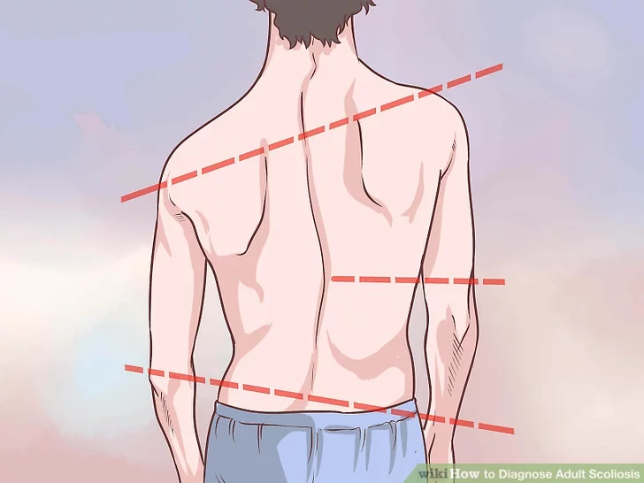

Существует несколько типов сколиоза, которые наблюдаются у детей. Безусловно, наиболее распространенным типом является «идиопатический», что означает, что точная причина неизвестна. Идиопатический сколиоз встречается у детей, которые начали ходить, а также у детей более старшего возраста. В большинстве случаев первые проявления начинаются в 10 лет, и продолжаются до тех пор, пока у подростка не прекратится рост.
В чем разница между идиопатическим сколиозом и другими типами сколиоза?
Идиопатический сколиоз
Термин идиопатический означает что причина заболевания неизвестна. Хотя мы не знаем точно, что является причиной большинства сколиотических деформаций (от 80% до 85%), но с уверенностью можем отметить фактор семейного наследования. Сколиоз не является инфекционным заболеванием, как простуда. Поэтому вы не сможете его предотвратить.
Врожденный сколиоз
Термин «врожденный» означает, что вы родились с этим заболеванием. Он появляется при внутриутробном развитии. Часть один или нескольких позвонков не формируются полностью или позвонок закладывается неправильной формы. Этот тип сколиоза может сопровождаться другими расстройствами, например, проблемами с сердцем или почками.
Нейромышечный сколиоз
Любая болезнь, которая поражает нервные пути и мышечную ткань, может привести к развитию сколиотической деформации. Это чаще всего связано с дисбалансом мышц и/или их слабостью. Основные нервно-мышечные заболевания, которые могут привести к сколиозу, - это церебральный паралич, мышечная дистрофия и повреждение спинного мозга.
Насколько серьезные последствия сколиоза для подростка?
Сколиоз у подростков не подвергает их жизнь опасности, большинство деформаций не вызывает серьезных проблем. Однако, если степень искривления высока, то возможно негативное влияние на рост ребенка.
Когда величина сколиотической дуги большая, это также может вызвать проблемы с работой сердца и легких. Кроме того, возможно сдавление спинномозговых нервов или спинного мозга, что может привести к развитию паралича. Это случается очень редко. Адекватное лечение позволяет предотвратить опасное прогрессирование искривления.
Сколиоз вызывает боль в спине?
Подростковый сколиоз не должен вызывать болевой синдром в спине, хотя деформация высокой степени может вызвать дискомфорт. Если беспокоит сильная боль в спине или слабость конечностей, онемение, следует обратиться к врачу.
Может ли сколиоз излечиваться самостоятельно?
Деформации при идиопатическом сколиозе не излечиваются сами по себе. У многих детей имеются небольшие дуги искривления, которые не требуют лечения. В этих случаях дети растут и ведут нормальную жизнь, но имеющаяся деформация останется.
Если при серьезной степени искривления лечение не проводится, то остается только надеяться, что прогрессирования не будет. Это зависит от того, когда ваш ребенок перестанет расти. Как правило при окончании роста, деформация может остановить свое прогрессирование. Если костный рост еще не закончен, то сколиоз, скорее всего, продолжится.
Что я могу сделать, чтобы предотвратить прогрессирование сколиоза?
Единственное лечение, которое способно, приостановить дальнейшее прогрессирование идиопатического сколиоза - это применение корсета, либо оперативное лечение. В медицинской литературе нет серьезных доказательств того, что физиотерапия, электростимуляция, мануальная терапия или другие варианты альтернативного лечения оказывают какое-либо влияние на сколиоз.
Безопасно ли для моего ребенка делать физические упражнения и заниматься спортом?
Дети с идиопатическим сколиозом могут заниматься любым видом спорта, если у них нет болевого синдрома, связанного с физической нагрузкой. Нет сомнений в том, что упражнения укрепляют детское здоровье.
Сможет ли мой ребенок жить обычной жизнью?
Да, люди с деформациями позвоночника, которые не требуют хирургического вмешательства, могут заниматься теми же видами спорта, как люди, у которых их нет. Достаточно редко существуют ограничения на какой-либо вид деятельности и физической нагрузки. То же самое относится и к людям, перенесшим оперативное лечение по поводу сколиоза. Они могут работать на той же работе, что и люди, которые никогда не оперировались. Они могут заниматься теми же видами спорта, что и до операции. Однако им следует обратиться к своему врачу, прежде чем приступить к занятиям (работа или спорт), чтобы убедиться в том, что у них нет других, специфических ограничений.
Влияет ли то, что у некоторых членов семьи имеется сколиоз?
Да, примерно 30% пациентов с подростковым идиопатическим сколиозом имеют семейный анамнез. В настоящее время разрабатывается множество исследовательских проектов для определения генетической или наследственной связи.
Если у меня сколиоз, будет ли он у моего ребенка?
Согласно последним исследованиям, у каждого из трех детей, чьи родители страдают сколиотической деформацией, развивается деформация позвоночника. Сколиоз считается частично генетически наследуемым заболеванием. Врачи не знают, какой именно ген является причиной.
Существует генетический тест на носительство идиопатического сколиоза, но он специфичен только для некоторых этнических групп. Этот тест используется для прогнозирования того, может ли заболевание ухудшиться. Врачи до сих пор не знают, может ли этот тест быть использован для прогнозирования вероятности передачи сколиоза детям.
Плохая осанка моего ребенка является причиной сколиоза?
Нет, плохая осанка не вызывает сколиоз. Сколиоз может быть причиной плохой осанки вашего ребенка, особенно если он имеет тенденцию к наклону в бок.
Может ли разница в длине ног вызывать или ухудшить течение сколиоз?
Разница в длине ног не является причиной сколиоза. Однако большая разница в длине может ухудшить его течение. В редких случаях может потребоваться ортопедическая обувь. Различные подкладки для обуви могут быть применены для коррекции некоторого дисбаланса туловища, который может быть связан с разницей в длине ног.
Могут ли занятия спортом или ношение рюкзака вызвать сколиоз?
Спортивные занятия или ношение рюкзаков не вызывают сколиоз и не ухудшают состояние при нем. Однако тяжелые рюкзаки могут вызвать боль в спине. Если она возникает, то рекомендуется уменьшить вес. Дети должны носить легкие рюкзаки с ремнями на обоих плечах.
Сколиоз связан с травмой?
Идиопатический сколиоз не вызывается каким-либо повреждением или травмой.
Как я могу это предотвратить?

Поскольку причины сколиоза точно не известны, трудно определить, как его предотвратить. При генетических причинах, невозможно что-либо сделать.
В каком возрасте дети должны пройти скрининг на наличие сколиоза?
Дети могут быть обследованы в любом возрасте, хотя идиопатический сколиоз чаще обнаруживается во время ускоренного роста (от 10 до 15 лет). SRS (Общество Исследования Cколиоза) рекомендует, чтобы девочки дважды проходили скрининг, в возрасте 10 и 12 лет, а мальчики один раз в 12 или 13 лет. Существует много споров относительно преимуществ скрининга в школе.
Необходимо ли осматривать братьев и сестер если у одно из них обнаружен сколиоз?
Поскольку сколиоз имеет тенденцию встречаться в семьях, следует обследовать братьев или сестер на ежегодных медицинских осмотрах, особенно в периоды ускоренного роста (от 10 до 15 лет).
Раннее выявление важно, и родители могут в этом помочь. Посмотрите на спину вашего ребенка в купальном костюме. Если вы видите, что одно плечо кажется выше другого, или одна сторона грудной клетки становится более выпуклее чем другая, проконсультируйтесь с вашим педиатром.
Когда следует обследовать детей у родителей с сколиозом?
Дети, чьи родители имеют сколиотическую деформацию, должны обследоваться ежегодно, особенно в периоды активного роста (от 10 до 15 лет).
Почему мы не можем определить наличие сколиоза в более раннем возрасте?
Во многих случаях искривление не появляется до начала подросткового возраста. Небольшие искривления часто остаются незамеченными до тех пор, пока у ребенка не ускорится рост во время полового созревания. Поскольку сколиоз редко вызывает боль, дети и их родители не могут его заметить, пока не появятся более очевидные признаки.
Кроме того, подростки склонны умалчивать о своих проблемах. Многие девочки застенчивы и склонны носить свободную одежду. Деформация становится заметной при ношении обтягивающей одежды (купальники, футболки). Вместе с тем, подростки могут не наблюдаться у педиатра регулярно.
Почему наш педиатр не обнаружил сколиоз раньше?
Сколиотические дуги могут прогрессировать очень быстро, особенно в период предподросткового возраста. Ваш педиатр, возможно, не осматривал вашего ребенка в этот период времени.
Какие обследования проводится при сколиозе в настоящее время?
оценка угла Кобба на рентгенограмме
В настоящее время исследования сосредоточены на причинах заболевания. Существует много факторов, которые могут являться причиной заболевания. Основные - это генетические (наследственные) факторы, изменения в мягких тканях (мышцы, связки и межпозвонковые диски), повреждения при развитии позвоночного столба, а также проблемы в центральной нервной системе.
Рождаются ли дети с идиопатическим сколиозом?
Дети с истинным идиопатическим сколиозом, возможно, родились с генами, которые вызывают сколиотическую деформацию. Эти гены, точно не известны, но исследователи работают над их поиском.
Существует ли генетический тест на сколиоз?
Да, данные литературы показывают, что существует ряд тестов, которые позволяют спрогнозировать прогрессирование деформации у различных этнических групп. Однако, в широкой клинической практике эти тесты практически не используются, так как они не обладают универсальностью. Работы в этой области ведутся.
По материалам Scoliosis Research Society (srs.org)